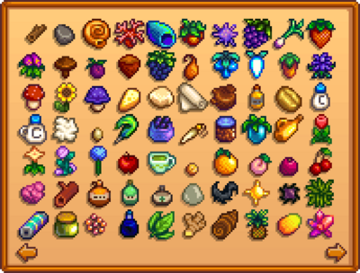
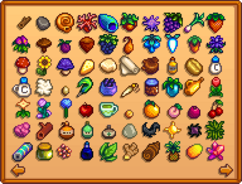

Colecciones
La pestaña de colecciones es un registro de aquellos artículos que han sido descubiertos y en qué cantidades
Artículos enviados
Esta pestaña hace un seguimiento de cada tipo y cantidad de objetos enviados a través de la caja de envíos en la granja
 

Página uno
Página dos
Página tres
Pescados
Esta pestaña hace un seguimiento de cada tipo y cantidad de peces capturados, usando una caña de pescar o trampa para cangrejos. Los peces se registran una ves que los atrapas o recoges de la trampa. Los peces no necesitan ser enviados para que se agreguen a la colección.
Los peces recogidos de la playa u obtenidos de enemigos no cuentan para la colección.


Página uno
Página dos
| Gelatina de Mar | Palometa |
Artefactos
Esta pestaña hace un seguimiento de cada tipo y cantidad de artefactos recolectados. Los objetos se registran una vez encuentres el artefacto. El artefacto no necesita ser donado al museo o enviado mediante la caja de envíos para que cuente en la colección.
Tener en cuenta que los artefactos encontrados en los cofres del tesoro u obtenidos al arar la tierra en las minas no puedan contar para la colección. Arrastrar y tirar el artefacto fuera del inventario, y recogerlo nuevamente puede solucionar esto. Sostener el artefacto en el inventario durante la madrugada también podría corregir esto.
También tener en cuenta que las descripciones de los artefactos aparecen en la pestaña de colecciones tan pronto sean encontrados, incluso si la descripción del inventario dice "Gunther te podrá contar más sobre esto si lo donas al museo".

Minerales
Esta pestaña hace un seguimiento de cada tipo y cantidad de minerales recolectados. Los objetos son registrados cuando el mineral es llevado hacia el inventario. El mineral no necesita ser donado al museo para que se registre.
Tener en cuenta que los minerales encontrados en los cofres del tesoro no podrían contar para la colección. Arrastrar y tirar el artefacto fuera del inventario, y recogerlo nuevamente puede solucionar esto. Sostener el artefacto en el inventario durante la madrugada también podría corregir esto.
También tener en cuenta que las descripciones de los minerales aparecen en la pestaña de colecciones tan pronto sean encontrados, incluso si la descripción del inventario dice "Gunther te podrá contar más sobre esto si lo donas al museo".
Cocina
Esta pestaña hace un seguimiento de cada tipo y cantidad de platos que el jugador ha cocinado en la cocina de la casa de campo. Los platos no necesitan ser enviados para que cuente en la colección.
Nota: El Escargot y la Caldereta están en posiciones opuestas cuando se accede desde la interfaz de cocina a la que se accede en la pestaña de colecciones (abajo).

Página uno
Página dos
| Crema de langosta | Bollito de arce | Tortas de cangrejo | Cóctel de gambas | Refresco de jengibre | Pudding de plátano | Arroz pegajoso de mango | Poi | Curry tropical | Ravioli de tinta de calamar |
| Sopa musgosa |
Logros
Artículo principal: Logros
Notas secretas
Artículo principal: Notas secretas